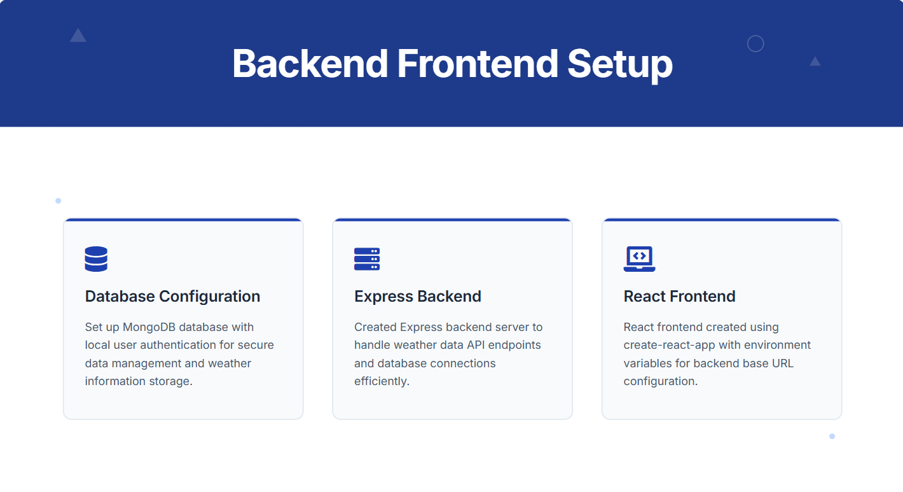
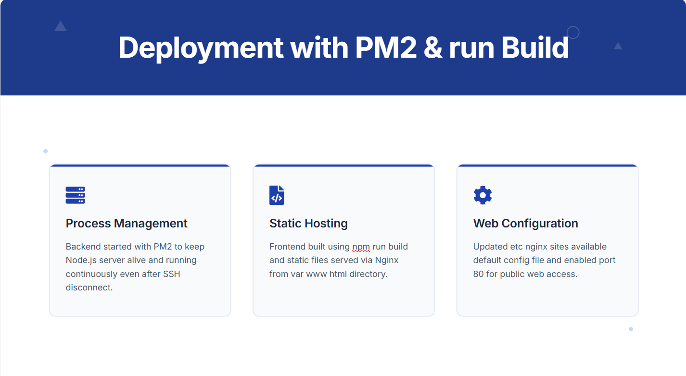
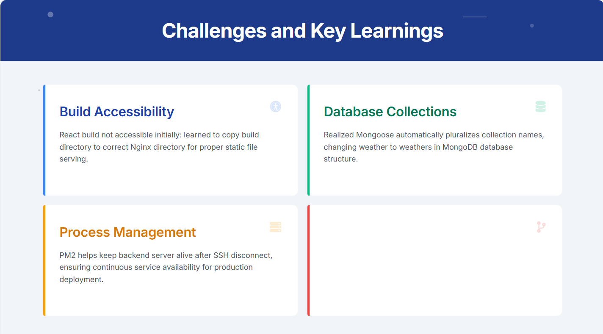
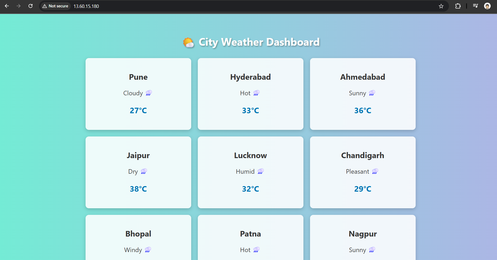
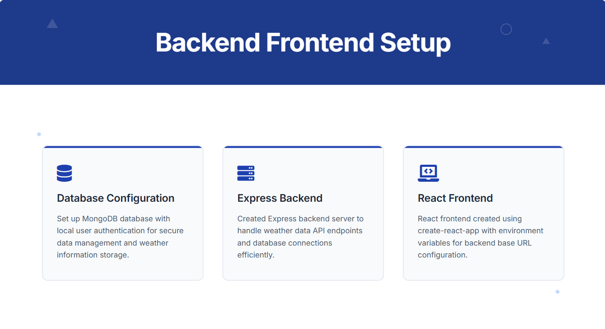
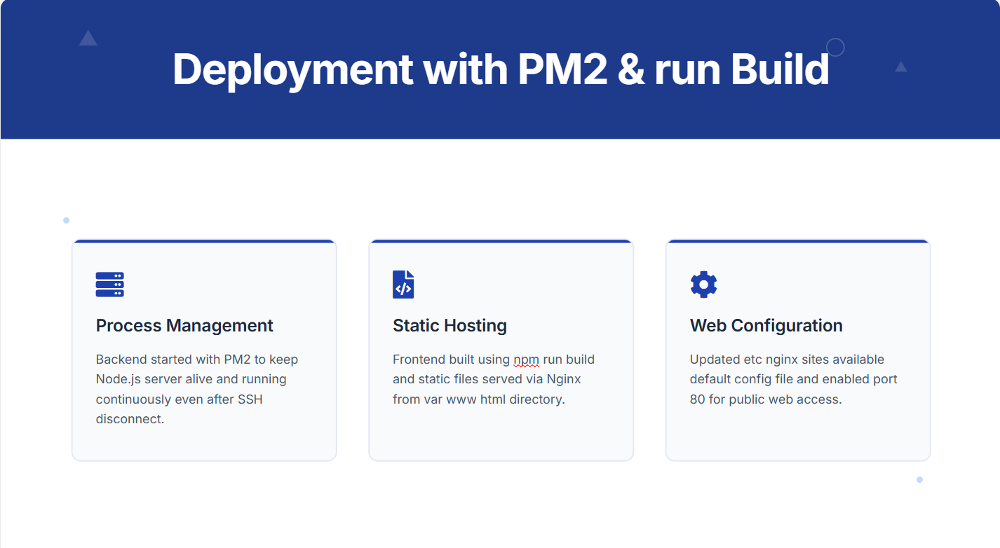
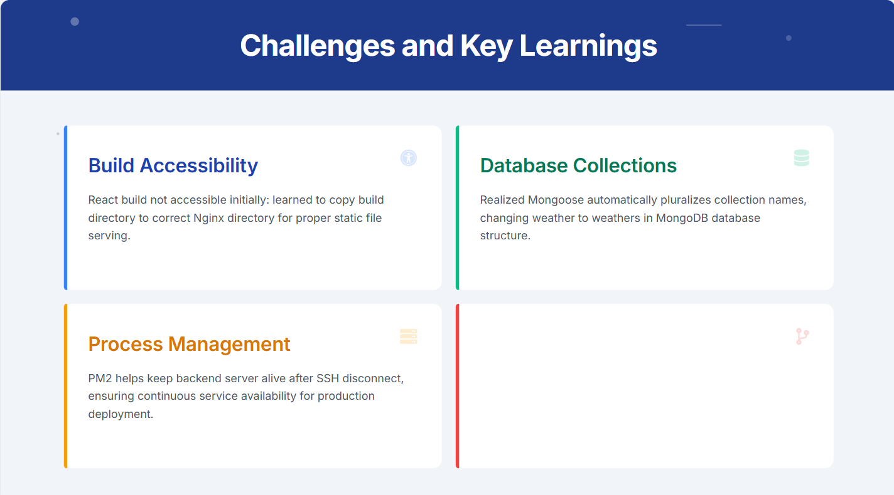
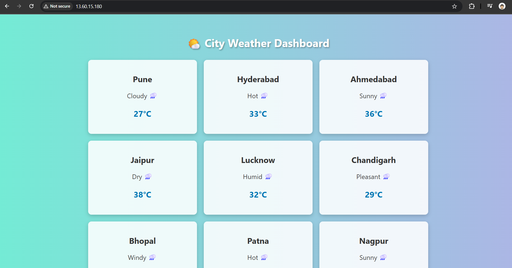

📋 Project Summary
🚀 Project: Deploying MERN Stack Web App on Nginx (Ubuntu EC2) 🔧 Role: Cloud & DevOps Engineer (Hands-on Deployment) In this project, I deployed a full MERN stack application on an AWS EC2 Ubuntu instance using PM2 and Nginx, focusing on real-world DevOps tasks instead of full-stack development. 🔹 Key Tasks Performed: Launched and configured an EC2 instance (Amazon Linux/Ubuntu) Installed and configured Node.js, MongoDB, and PM2 for backend process management Built a React frontend and hosted it using Nginx Managed firewall settings (opened ports 22, 80, 3000) Connected backend (Express) with MongoDB, handling CRUD Used environment variables for secure backend API calls Configured Nginx to serve static React files from /var/www/html Ensured backend runs continuously even after SSH disconnect via PM2 🛠️ Tools & Technologies: EC2, Ubuntu, Nginx, PM2, Node.js, MongoDB, Express.js, React.js, Bash ✅ Outcome: Successfully hosted a production-ready MERN app manually without CI/CD. This project demonstrates my ability to handle end-to-end deployment, process management, and web hosting using cloud-native tools..